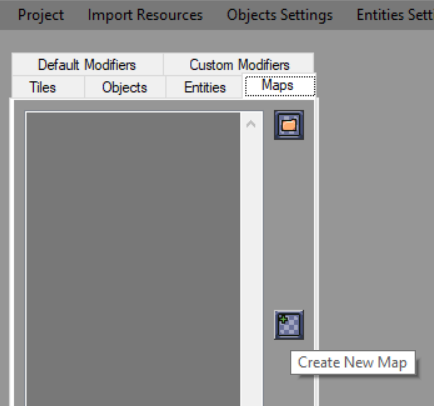
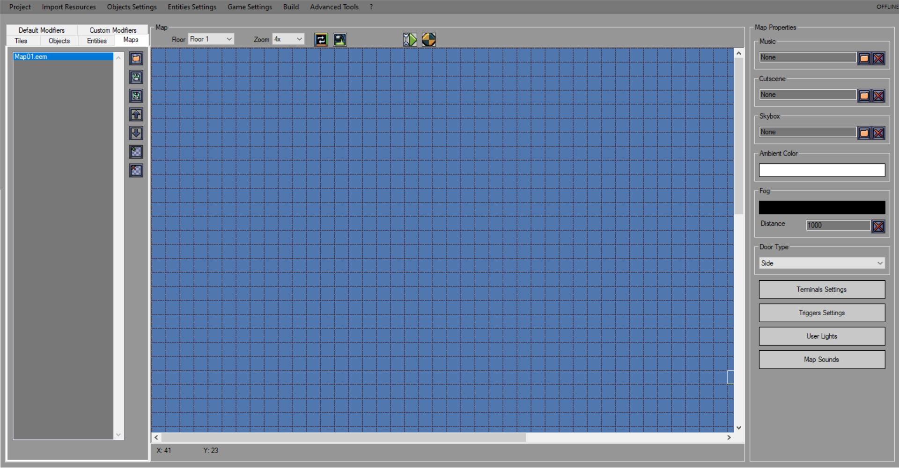

When tiles are added you can start making your map. Doing that is pretty simple.
First of all create a new map by selecting "Maps" tab and clicking "Create a new map" button. This will open a prompt where you'll be able to name your map file.

After that a map editing screen will show up. To the right you'll see a list of map properties which you can change at any time:

Here you can:
Import music file
Import cutscene file (basically an image that will be shown before map starts. For more complex cutscenes see "Advanced Use/Scripting")
Import skybox file
Set map ambient lighting color
Set map fog color and distance
Set doors type for this map
Set terminals scripts (see "Advanced Use/Terminals")
Set triggers scripts or sounds (see "Advanced Use/Triggers")
Set user lights colors and radii
Change some sounds for this map (such as doors opening sound)
Tabs to the left contain tiles, objects and modifiers (see "Modifiers"). To the top of the map editor are Zoom and Floor selections. You can change floor whenever you want, the lower floor will be shown as slightly lighter layer beneath the current one.
To place tiles just select the one you want from "Tiles" tab and press left mouse button on the map where you want to place it. Right mouse button lets you remove a placed tile. If you hold the control key while placing or removing a tile, you can drag the mouse to modify a rectangle region. Walls will be marked with red outline while floors will be placed as the texture it represents.
At the bottom of the map window there is a checbox that allows you to hide entities layer. This is useful when you don't need them to overlay the main map.
Map editing
Map editing is extremely simple. There are only a few things you need to keep in mind:
If you need different textures for top and bottom side of a block (walls only) you can use a special texture consisting of two different textures placed together into one tall texture. The top one will be texture for main sides and the bottom one will become texture for top and bottom sides (floor and ceiling) (see image below). For more info see "Cubemaps".
Floors can't be seen from above. That means that if you place a floor on floors higher than first one, there will be no floor (though you will be able to walk on it). To add a second floor you have to use walls on the lower floor.
There are three skybox types which can be selected with the dropdown box. Flat is a flat plane above the world. Cylinder surrounds the sides of the world like in Doom. Cube will completely surround the world, and allow you to use a cubemapped texture. Choosing a fog color will help blend the skybox and geometry together in a visually appealing way.